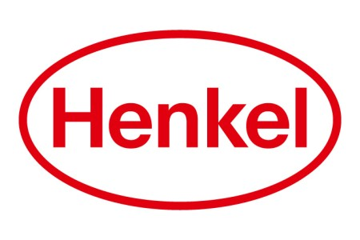
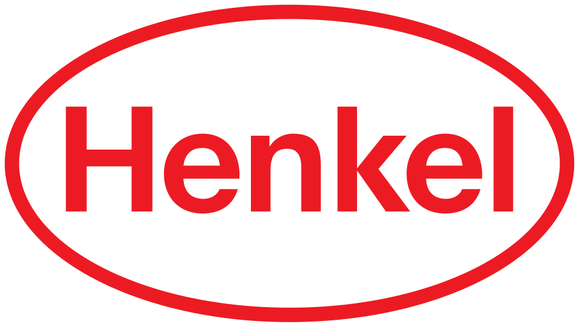

홈 > 브랜드 매거진 > 헨켈
헨켈
헨켈(Henkel)은 1876년 독일에서 설립된 생활화학·접착기술 분야의 다국적 소비재 대기업이다.
산업 분야 브랜드·비즈니스 · 공개 등급 자료 기반 · 브랜드 평가 4.2 ★


한눈에 보는 브랜드
헨켈은 1876년 독일 아헨에서 프리츠 헨켈이 두 동업자와 함께 규산소다 기반 세제 공장으로 시작한 화학·소비재 기업이다. 1878년 단독 경영권을 확보하며 본사를 뒤셀도르프로 옮긴 것과 1907년 페르실 출시로 브랜드 세제 시대를 연 것이 초기 두 전환점이었다.
오늘날 접착제 테크놀로지와 소비재 두 축으로 약 150개국에서 사업을 펼치며, 2024년 매출은 약 216억 유로, 2025년에는 약 205억 유로 규모에 이른다.
브랜드 관점
헨켈의 핵심 차별점은 한 회사 안에 산업용 접착제 세계 1위와 글로벌 소비재 사업을 동시에 보유한 이중 구조다. P&G·유니레버·로레알이 세제와 헤어케어에서 정면으로 맞서지만, 헨켈은 13퍼센트가 넘는 점유율로 누구도 쉽게 따라오기 어려운 접착제 시장 지배력을 안정적 수익 기반으로 삼는다.
3M·시카가 특수 테이프와 건설용 화학에서 경쟁하나 접착제 전반의 통합도에서는 헨켈이 앞선다. 2023년 세탁·홈케어와 뷰티케어를 소비재 단일 부문으로 합치고 러시아 사업을 정리했으며, 효율화와 구조조정 2단계로 수익성을 끌어올리는 중이다.
2025년 조정 영업이익률은 14.8퍼센트로 개선됐다. 한국에서는 1989년 진출 이후 산업용 접착제와 가정용 살충제·세제·헤어케어를 함께 전개하며 B2B와 일반 소비 양쪽을 동시에 공략한다.
시작과 성장
19세기 후반 독일은 산업화가 본격화되며 위생과 가사 노동 경감에 대한 수요가 커지던 시기였다. 1876년 프리츠 헨켈은 아헨에서 동업자들과 함께 규산소다를 원료로 한 만능 세제를 내놓으며 사업을 시작했다.
1878년 그는 동업 관계를 정리하고 독일 최초의 상표 세제로 평가받는 표백 소다를 선보였으며, 같은 시기 본사를 물류와 확장에 유리한 뒤셀도르프로 이전했다. 1907년에는 자동 표백 세제 페르실을 출시해 가정 세탁 방식을 바꿨고, 같은 해 상징인 붉은 타원이 등장해 1920년 사명이 그 안에 새겨졌다.
이후 1923년 접착제 사업에 진출했고, 1995년 슈바르츠코프, 1996년 록타이트, 2004년 다이알, 2008년 내셔널 스타치를 인수하며 헤어케어와 산업용 접착제 영역의 국제 확장을 가속했다. 한국에는 1989년 정식 진출했다.
브랜드 아이덴티티
헨켈의 정체성은 품질과 신뢰, 지속가능성, 그리고 가족 기업다운 장기적 책임감에 뿌리를 둔다. 시각적으로는 1907년 등장한 붉은 타원이 100년 넘게 핵심 상징으로 이어져 왔으며, 붉은색과 흰색이 디자인의 기반을 이룬다.
타원의 수평 형태는 안정과 성장을, 강렬한 색은 진취성을 드러낸다. 2022년에는 기업 브랜드 정체성을 정비해 두 사업 축을 아우르는 통합된 인상을 강화했다.
대상은 일반 가정 소비자부터 자동차·전자·항공 등 산업 고객과 전문 기능공까지 폭넓으며, 메시지는 과장보다 성능과 혁신, 친환경 약속을 담담히 전하는 신뢰 중심의 어조를 택한다. 2030년 기후중립 목표가 이런 방향성을 뒷받침한다.
제품과 서비스
사업은 접착제 테크놀로지와 소비재 두 부문으로 나뉜다. 접착제 부문은 130여 개국에서 판매되는 세계 1위 브랜드 록타이트를 비롯해 산업용 접착제·실란트·기능성 코팅을 공급한다.
소비재 부문은 독일 인지도가 100퍼센트에 가까운 세탁 세제 페르실, 헤어케어 슈바르츠코프, 식기세제 프릴, 그리고 파·프릿·다이알 등을 거느린다. 판매 경로는 산업 고객 대상 B2B 직거래와 대형마트·드러그스토어·온라인을 아우르는 일반 소비 유통으로 이원화돼 있다.
사람들
창업자: 프리츠 헨켈(Fritz Henkel)이 1876년 창업했다. 소유: 독립 상장사(헨켈 AG & Co.
KGaA, DAX), 헨켈 가문이 지배한다.
현재 상태
본사는 독일 뒤셀도르프에 있다. 지배구조는 주식합자회사 형태로, 5세대에 걸친 창업가 일가가 160명이 넘는 가족 주주를 통해 의결권 다수를 유지하며 경영을 통제한다.
경영이사회 의장은 카르스텐 크노벨이다. 임직원은 약 4만 7천 명으로 80퍼센트 이상이 독일 밖에서 근무한다.
매출은 2024년 약 216억 유로, 2025년 약 205억 유로이며, 2025년 조정 영업이익률은 14.8퍼센트다.
타임라인
BI/CI 변천사
함께 읽을 브랜드
AA
AA
브랜드·비즈니스 · 편집 검수AAAA는 2023년에 기록된 From the United Kingdom 계열의 브랜드 아이덴티티 사례입니다. Elmwood가 아이덴티티 작업의 디자이너로 기록되어 있습...
 브랜드·비즈니스 · 편집 검수Walmart
브랜드·비즈니스 · 편집 검수Walmart월마트는 1962년 샘 월튼이 미국 아칸소에서 시작한 세계 최대 규모의 소매 기업이다. 상시저가(EDLP) 전략과 대형 할인점 모델로 성장해 수십 년간 매출 기준 세...
 브랜드·비즈니스 · 편집 검수Citibank
브랜드·비즈니스 · 편집 검수Citibank씨티(Citi)는 미국 씨티그룹이 운영하는 글로벌 소비자·기업 금융 브랜드로, 1812년 뉴욕에서 출발한 시티뱅크 오브 뉴욕을 뿌리로 한다. 빨강 아치가 워드마크 위...
 브랜드·비즈니스 · 편집 검수Mitsubishi Motors
브랜드·비즈니스 · 편집 검수Mitsubishi Motors미쓰비시 자동차(Mitsubishi Motors Corporation, MMC)는 일본을 대표하는 자동차 제조사로, 세 개의 빨간 마름모를 겹친 스리 다이아몬드 엠블...
 브랜드·비즈니스 · 자료 기반키움증권
브랜드·비즈니스 · 자료 기반키움증권키움증권은 2000년 다우기술과 삼성물산 등이 출자해 키움닷컴증권으로 출범한 온라인 기반 증권사다. 2004년 코스닥, 2009년 유가증권시장에 상장했고 2006년...
 브랜드·비즈니스 · 자료 기반효성
브랜드·비즈니스 · 자료 기반효성효성(Hyosung)은 섬유·중공업·화학을 아우르는 한국의 복합 기업집단으로, 1966년 동양나일론에 뿌리를 둔다.
 브랜드·비즈니스 · 자료 기반NH투자증권
브랜드·비즈니스 · 자료 기반NH투자증권NH투자증권은 2014년 우리투자증권과 NH농협증권의 합병을 거쳐 2015년 1월 공식 출범한 종합증권사다. 농협중앙회가 NH농협금융지주를 100% 보유하고 그 지주...
 브랜드·비즈니스 · 편집 검수Deezer
브랜드·비즈니스 · 편집 검수DeezerDeezer는 2023년에 기록된 Designed by Koto 계열의 브랜드 아이덴티티 사례입니다. Koto가 아이덴티티 작업의 디자이너로 기록되어 있습니다. 공개...